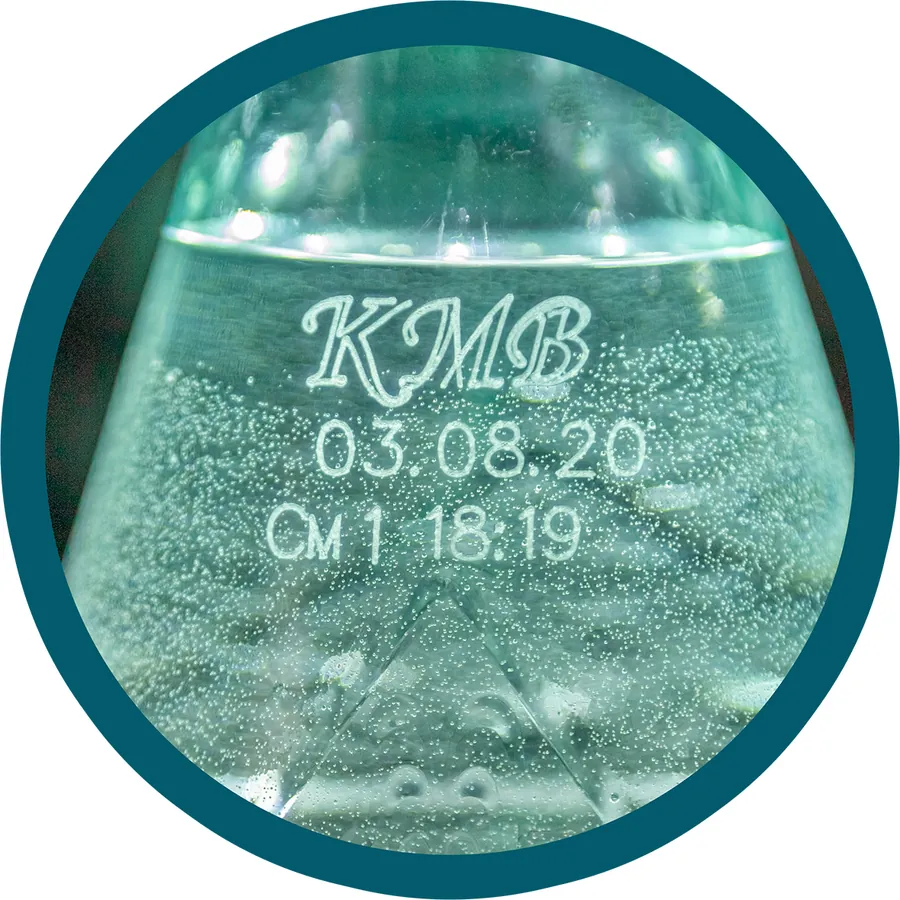

АО «Кавминводы»
Лабораторный контроль
Аттестованная лаборатория, проверка каждой партии и система безопасности пищевой продукции по стандарту FSSC 22000
Работа предприятия направлена на сохранение безупречного качества и органолептических свойств минеральной воды. На заводе ведётся постоянный производственный и лабораторный контроль.
Аттестованная лаборатория оснащена современным контрольно-измерительным оборудованием. На производстве разработана и внедрена система качества и безопасности пищевой продукции в соответствии с международными требованиями FSSC 22000. Стандарт обеспечивает строгий контроль сырья, материалов, условий производства и хранения.
Соблюдение санитарных правил и выполнение гигиенических мероприятий гарантируют высокое качество и длительный срок хранения продукции.
Чем подтверждено
Сертификаты и декларации предприятия — сертификат FSSC 22000, свидетельство о государственной регистрации и декларация о соответствии — собраны на отдельной странице, с номерами регистрации и сроками действия. Сканы открываются в полном размере.
Защита качества
Как отличить настоящую «Новотерскую целебную» от подделки. Признаки подлинности несёт сама бутылка — от колпачка до этикетки; на прежнем сайте предприятия они были расставлены выносками вокруг бутылки, здесь собраны в список в том же порядке.
-
Колпачок
Логотип отпечатан чётко способом лазерного тиснения, при механическом воздействии не стирается.
-
Бутылка
Новая, прозрачная, без потёртостей и царапин.
-
Лазерная маркировка
Нанесена лазерным принтером: буквы КМВ, дата розлива (день, месяц, год), номер смены и время розлива.
-
Гравировка
Фирменная гравировка-«волна» в верхней части бутылки.
-
Этикетка
Качество изображения, логотипа, шрифта, отсутствие грамматических ошибок. Указана ёмкость тары, есть знак пригодности материала тары для пищевой продукции, знак утилизации (петля Мёбиуса) и знак «Не сорите!».
